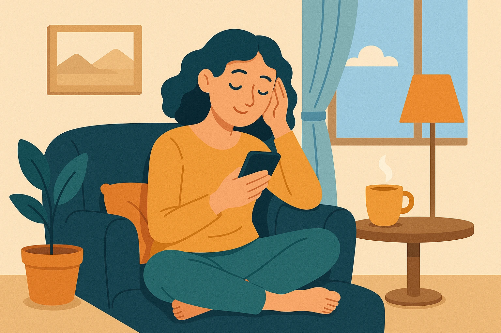

4 pasos para desconectar después del trabajo
¿Te cuesta desconectar al final del día? La transición del modo laboral al personal puede ser complicada, especialmente cuando el trabajo invade tu mente incluso fuera del horario. Aquí te damos una guía simple y eficaz con 4 pasos que te ayudarán a saber cómo desconectar después del trabajo y recuperar tu bienestar mental.
¿Por qué es importante desconectar después del trabajo?
Cuando no desconectas, tu cuerpo y mente permanecen en modo alerta. Esto puede derivar en estrés crónico, insomnio, fatiga mental y hasta síntomas de burnout. La desconexión diaria es clave para tu equilibrio emocional.
Paso 1: Crea un ritual de cierre diario
Establecer una rutina breve que indique el fin de la jornada ayuda al cerebro a cambiar de contexto. Puedes:
- Apagar el ordenador y cerrar el espacio de trabajo.
- Salir a caminar 10 minutos.
- Hacer respiraciones profundas (ver Guía de Respiración).
Paso 2: Cambia de entorno o vestimenta
Pequeños cambios físicos tienen gran impacto mental. Ponte ropa cómoda, enciende una vela o escucha música relajante. Estos gestos envían señales a tu sistema nervioso de que ya no estás en “modo productividad”.
Paso 3: Haz algo para ti
Dedica al menos 15 minutos a un hábito placentero no relacionado con el trabajo. Puede ser:
- Estirar el cuerpo con esta rutina de yoga para principiantes.
- Escribir en tu journal de mindfulness.
- Probar uno de estos 5 micro-hábitos diarios.
Paso 4: Establece límites digitales
Evita revisar correos o apps del trabajo al terminar tu jornada. Usa la opción “No molestar” del móvil o deja el dispositivo en otra habitación. Desconectar de la pantalla ayuda a calmar la mente (lee cómo calmar la mente en 60 segundos).
Consejo extra: Diseña tu rincón de paz
Crear un rincón de paz en casa te dará un espacio fijo para relajarte cada día después del trabajo. No necesitas mucho: una planta, una alfombra, una lámpara cálida y silencio bastan.
¿Qué hacer si no puedes desconectar?
Si aún con estos pasos no logras desconectar, evalúa si estás sobrecargado o en riesgo de agotamiento emocional. Puedes revisar los síntomas de burnout o pedir ayuda profesional.